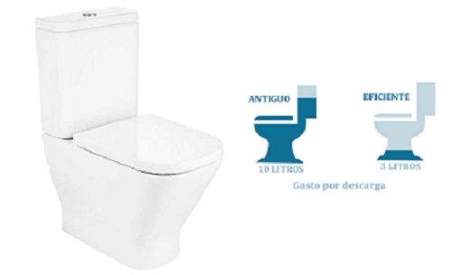
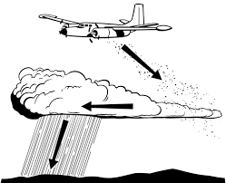
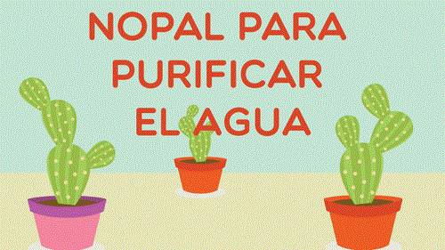

Carbón activado.
El carbón activado contiene un laberinto de diminutos poros con tamaños que oscilan entre 500-1000 nm y una superficie de unos 1000 metros cuadrados por gramo. La naturaleza de esta superficie permite la adsorción de las impurezas orgánicas del agua y la descomposición catalítica del cloro libre y, más despacio, de las cloraminas. La gran superficie del carbón activado significa que los compuestos orgánicos se adsorben a la superficie a través de las fuerzas iónicas, polares y de Van der Waals. El carbón activado suele utilizarse en combinación con otras tecnologías en el proceso de purificación del agua y su uso debe tenerse en cuenta para el diseño del producto. Una de las principales ventajas del carbón activado en el proceso de pretratamiento es que elimina cualquier cloro o cloramina.

Cisternas eficientes
Aquí la tecnología es muy importante, ya que va a condicionar mucho el consumo de agua. Mientras que en las cisternas antiguas, todas las descargas eran de entre 9-12 litros, en las modernas más habituales, de doble pulsador, la descarga grande es de 6 litros y la pequeña de 3, aunque existen inodoros que pueden bajar estos valores a 4 y 2 litros respectivamente.
Ultravioleta
La luz ultravioleta (UV) se utiliza como forma de inactivar los microorganismos mediante la interrupción de los ácidos nucleicos y la alteración de su ADN, lo que evita eficazmente su reproducción. La luz ultravioleta que se utiliza en línea en los sistemas de purificación de agua de laboratorio son lámparas de mercurio de baja presión. La radiación UV altera el ADN y las ARN-polimerasas a dosis bajas, además de descomponer las moléculas orgánicas grandes en componentes ionizados más pequeños. Estos componentes se eliminan aguas abajo mediante lechos de resina de intercambio iónico de alta pureza. La eliminación previa de los iones orgánicos optimiza la eficacia de esta tecnología para la purificación del agua. La luz ultravioleta también se utiliza en la fotólisis para eliminar especies de cloro y cloramina del agua.

Siembra de nubes
La siembra de nubes es una técnica de modificación del clima que mejora la capacidad de las nubes para producir lluvia.Antes de que un avión surque los cielos, los meteorólogos deben seleccionar la nube correcta para sembrar. El proceso sólo funciona en los cúmulos debido a su corriente de aire interna ascendente. Los pilotos colocan sus aviones en la parte inferior de la corriente de aire de las nubes y encienden bengalas cargadas de partículas de sal higroscópica. A medida que las partículas de cloruro de sodio y cloruro de potasio se elevan hacia el cuerpo de la nube, atraen diminutas gotas de agua. Estas gotas de agua se combinan y aumentan de tamaño, lo que hace que caigan del cielo debido a su peso. En las regiones en las que llueve poco al año, esta es una valiosa fuente de agua que requiere un uso mínimo de energía. Una hora de siembra de nubes puede devolver hasta 100.000 metros cúbicos de agua.
Nopal para purificar
Hoy el proceso es el mismo pero algunas cosas han cambiado. La forma de utilizarlo ha cambiado. En vez de picar los nopales y echarlos al agua, con el nuevo método lo que se hace es disolver polvo procedente del nopal en el agua y dejarlo reposar. Este polvo se obtiene a partir del procesado de la baba del nopal, o mucílago. El polvo de nopal es capaz de neutralizar metales pesados, bacterias coliformes, sulfatos, algunas sales (por ejemplo, cloruros), fluoruros.
